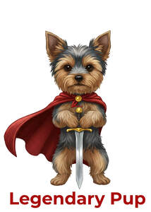

Trade Mark Journal No.2025/050 12 December 2025
UK00004305196 4 December 2025 (16,25)

- Class 16
- Printed packaging materials of paper; Printed stationery; Printed advertisements; Paper cartons for delivering goods; Printed paper labels; Printed luggage labels; Printed books; Printed pamphlets; Printed recipes sold as a component of food packaging; Printed tickets; Printed leaflets; Printed cardboard invitations; Printed brochures; Printed paper signs; Printed booklets; Printed promotional material; Printed certificates; Printed cards; Forms, printed; Printed forms; Printed flyers; Printed educational materials; Printed vouchers; Printed coupons; Printed paper invitations; Photographs [printed]; Printed photographs; Printed diplomas; Printed calendars; Printed periodicals; Printed invitations; Printed greeting cards with electronic information stored therein; Printed emblems [decalcomanias]; Printed advertising boards of paper; Printed art reproductions; Printed patterns; Packaging materials made of recycled paper; Printed timetables; Timetables (Printed -); Printed emblems; Printed informational cards; Printed newsletters; Printed publications; Publications (Printed -); Printed advertising boards of cardboard; Printed informational sheets; Printed novelty wine labels; Printed information sheets; Printed music; Printed training materials; Printed menus; Printed consumer reports; Printed manuals; Printed correspondence course materials; Printed questionnaires; Printed informational flyers; Printed teaching materials; Printed lectures; Adhesive printed labels; Printed programmes.
- Class 25
- Clothing; Jackets [clothing]; Knitwear [clothing]; Ready-to-wear clothing; Woolen clothing; Furs [clothing]; Clothing layettes; Garments for protecting clothing; Layettes [clothing]; Linen clothing; Headbands [clothing]; Headbands for clothing; Gloves [clothing]; Gloves as clothing; Clothes; Aprons [clothing]; Maternity clothing; Kerchiefs [clothing]; Jerseys [clothing]; Denims [clothing]; Shorts [clothing]; Cashmere clothing; Capes (clothing); Oilskins [clothing]; Gabardines [clothing]; Silk clothing; Leather clothing; Clothing of leather; Leather (Clothing of -); Collars [clothing]; Parts of clothing, footwear and headgear; Veils [clothing]; Knitted clothing; Hoods [clothing]; Windproof clothing; Embroidered clothing; Corsets [clothing, foundation garments]; Wristbands [clothing]; Bandeaux [clothing]; Belts [clothing]; Belts for clothing; Rainproof clothing; Waterproof clothing; Casual clothing; Visors [clothing]; Jackets being sports clothing; Jackets (Stuff -) [clothing]; Stuff jackets [clothing]; Playsuits [clothing]; Bottoms [clothing]; Clothing for leisure wear; Ready-made clothing; Latex clothing; Trunks being clothing; Woven clothing; Infant clothing; Leisure clothing; Clothing for sports; Sports clothing; Drawers [clothing]; Drawers as clothing; Ties [clothing]; Athletic clothing; Clothing for children; Muffs [clothing]; Clothing for babies; Bodies [clothing]; Tops [clothing]; Clothing for infants; Clothing for cycling; Fabric belts [clothing]; Weatherproof clothing; Pockets for clothing; Water-resistant clothing; Triathlon clothing; Handwarmers [clothing]; Beach clothing; Clothing for skiing; Thermal clothing; Chaps (clothing); Cowls [clothing]; Men's clothing; Fishing clothing; Dance clothing; Mitts [clothing]; Braces for clothing.
Stephen Fifield